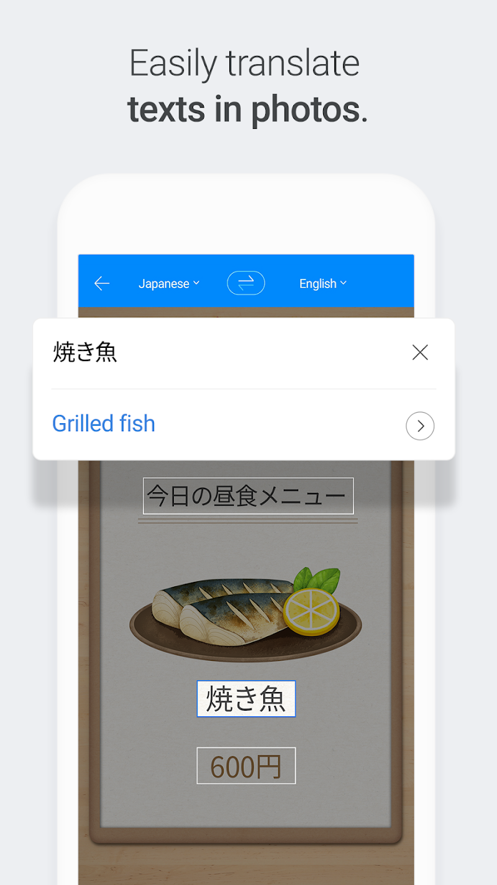

Papago 横向盘点：从旅行翻译到生产工具，七个能力域的完整画像
Papago 不只是旅行时掏出来拍菜单的翻译 App。本文从翻译形态、平台专属、发音训练、额度策略、离线省流、版本节奏、付费取舍七个维度，系统盘点这款 Naver 出品的翻译工具到底能覆盖多少场景。
Papago 在国内的知名度远不如它在韩国本土的地位。它由 Naver 运营，你可以在官网上直接体验网页版，整个产品横跨移动端、网页端和 iPad 的多形态翻译工具，从旅行应急到轻度文档生产都能接住。很多人只在用它拍菜单和招牌，但它的能力面比单次拍照翻译宽得多——本文按七个能力域，把它能做什么、强在哪、短板在哪，完整铺开。
一、翻译形态：不止文本拍照，还有对话和文档
翻译的核心形态决定了它能应对什么场景。Papago 目前覆盖五种输入方式，对应不同的使用节奏。
文本翻译 是最基础的形态，也是额度弹性最大的部分。未登录状态下大约 3000 字符，登录后额度更高，整段长文一口气翻完不在话下。网页版配合浏览器扩展可以直接在任何页面划词翻译，手机端则支持历史记录自动保存，翻到一半切走再回来也不会丢。
图片翻译 是旅行党的主力武器，Papago 在这个形态上做得比竞品更激进。2025 年把每日上限从 50 张提到了 100 张，还在 AI 简报里加入了商品识别——拍一张韩妆外包装，它能把成分和功效整理成结构化说明。iOS 26 上甚至实现了拍摄即时翻译，不用等拍照完成再导入。

语音与对话翻译 是另一层境界。打开对话模式，把手机横过来两头递，对方说什么直接翻译成你的语言显示在屏幕上，同时自动朗读。嘈杂环境下对方不愿意凑过来听语音，直接亮屏幕比扯着嗓子重复靠谱得多。语音翻译不按次数收费，只在部分小语种上依赖系统语音识别引擎。
文档翻译 是 2025 年才加入的新形态，保留原文档排版输出，适合定期需要翻译报告或说明书的职场用户。这个能力目前还有月度配额限制，但增长速度很快。
手写翻译 针对韩文和日文用户开放，手写一段韩文字符直接识别翻译——对不识韩文键盘布局却需要快速输入的人来说挺实用。
二、平台专属能力：Android 有 Mini，iPad 有多任务
Papago 在不同平台上的能力差异值得单独盘点。它不是一套代码跑全平台，而是针对 Android 和 iPad 做了专属增强。
Android 用户有一个 iPhone 上没有的杀手锏——Papago Mini 悬浮翻译。开启后，在任何应用里长按复制文字的瞬间，屏幕上会弹出一个小翻译窗，显示译文。不用切换应用，不用粘贴回翻译软件。追星刷韩国评论区、海淘跟民宿老板沟通、看外文资讯想快速扫一眼段落大意，Mini 都能接住。开启只需要授权一次无障碍权限，之后全程自动。
iPad 端则主打多任务协作——分屏、滑过、拖拽三件套齐了。把 Safari 拖一半看韩文页面，另一半打开 Papago 直接拖文本进去翻译，或者用 Slide Over 悬浮翻译窗在任何 App 上面随时调取。对于需要同时查资料、写笔记、翻译的用户，iPad 版的协作效率比在手机上反复切页高太多。

网页版是第三个独立形态，登录后额度更高、术语表管理更方便，适合在电脑上处理长文翻译。手机端下载和网页版互为备份——手机上翻菜单，电脑上翻报告，绝大多数需求都能覆盖。
iPhone 端相对朴素，没有 Mini 悬浮弹翻，近似做法是把文字粘贴进 App 或用系统共享菜单送进翻译。这是平台层面的硬限制，不是 Papago 本身不想做。
三、发音设置：不止调音量，还能学拼读
译文念出来是交流的另一半，Papago 在发音设置上的颗粒度比多数翻译工具细。
基础选项包括语速、重复次数、男女声选择——但两个语言特供功能才是亮点。韩文英文拼读可以把韩文读音用英文字母拼写显示出来，完全不识韩文的用户照着拼也能开口点单。中文拼音显示则让外国朋友看简体中文译文时能看到拼音标注，2025 年初才加入的功能更新。
这些设置在实战里各有用法：点餐时报数字可以把语速调慢、音量开大，让店员听清；学语言可以把重复次数调高，跟读对照发音；嘈杂环境里与其纠结语音输出，不如直接把屏幕亮给对方看——Papago 团队自己也在文档里提到了这个替代方案。
四、额度策略：旅行免费够用，生产才需付费
Papago 的免费版在旅行场景下几乎是够用的。100 张图片翻译的日额度、未登录 3000 字符起的文本额度、历史记录和常用句收藏不收费，这些组合起来应对一天里的菜单、招牌、问路绰绰有余。
真正把翻译当生产工具用的用户才需要考虑 Papago Plus。付费版主要增加三件事：更长的文本翻译额度、多份术语表管理、更强的文档处理额度。术语表这一点对翻译从业者特别有用——免费版通常只有默认术语表，付费后可以按项目分别管理，专有名词不会在不同文档里翻译出不同结果。
五、离线与省流：不是亮点但够扎实
Papago 的离线能力不激进，但在关键时刻靠谱。常用句收藏、历史记录自动保存、离线语言包下载，这些功能全部免费开启。2025 年底的版本更新进一步改善了离线翻译质量，还新增了离线语音翻译能力。
离线语言包按需下载，去韩国就下韩文包，去日本就下日文包，不会一次占满存储。语音翻译在离线时走本地识别引擎，效果当然比不上在线，但应急比完全不能用强得多。
六、版本节奏：更新快是好事也是痛点
Papago 的版本迭代速度在翻译工具里算快的。2025 年到 2026 年间可以查证的功能变动包括：新增文档翻译模式、图片翻译加入阿拉伯语、AI 简报商品识别、中文拼音显示、图片日额度翻倍、离线翻译质量改善。
快节奏更新带来一个副作用——网上教程和你手机上的界面对不上是常事。Papago 团队自己总结了三条规律：改名（同一能力换了名字）、挪位（入口位置随改版移动）、条件化（部分功能需要前置条件才出现，比如图片翻译网页版需登录、Android 离线语音需额外语言包）。遇到对不上先查自己的版本号，再对照Papago文档里的版本说明和官方帮助中心。
七、短板也要说
盘点不能只说好的。Papago 有几个客观局限值得提前知道：
iPhone 用户没有 Mini 悬浮弹翻，在应用内复制翻译都得靠系统共享菜单，效率差一截；免费版额度对重度文档翻译用户来说还是紧，长文档可能要分几次翻；版本更新快导致社区教程迅速过时，碰到功能对不上时直接查官方帮助中心比搜第三方教程靠谱；多语种混合文档的翻译质量还有提升空间，纯单语种场景下表现最好。
什么样的人该用 Papago
盘点下来，Papago 的覆盖面上能接住生产级文档翻译、下能兜住旅行应急，是个跨度挺大的工具。具体到人群，三类人最值得用：
出国旅行的人。 每日 100 张图片翻译 + 免费语音对话 + 离线语言包，这套组合应对日本韩国东南亚的日常交流基本够用，免费版就能覆盖。相比 Google 翻译，Papago 在东北亚语言上的细节处理更到位。
追星海淘党的重度用户。 Android Mini 悬浮弹翻是这类用户的效率杀手——刷韩文评论区、看韩妆成分表、跟卖家沟通都不用切应用。配合免费版额度，追星场景几乎不用掏一分钱。
有轻度文档翻译需求的职场人。 每月定期翻几份外文报告或说明书，Papago Plus 的文档翻译额度和术语表管理比单独买翻译软件划算。网页版配合浏览器扩展的体验也比复制粘贴进翻译工具流畅得多。
Papago 的官网和下载渠道在它的推广站和下载页都有整理，深入用法前文中也提到过几处资料入口。这套资料在GitHub、Gitee 和 GitCode 三个仓库都能拿到——GitHub 上是完整的 Markdown 源文件，国内访问 Gitee 和 GitCode 速度更快，按需取用就行。